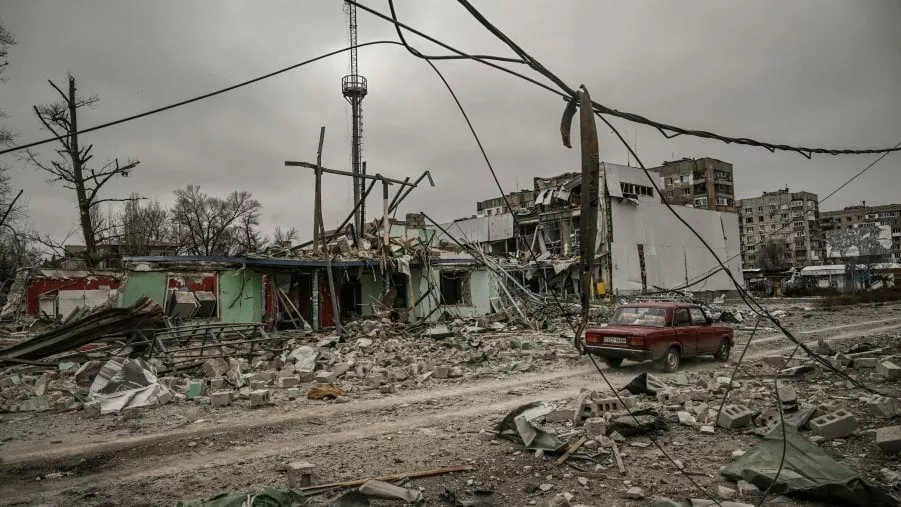
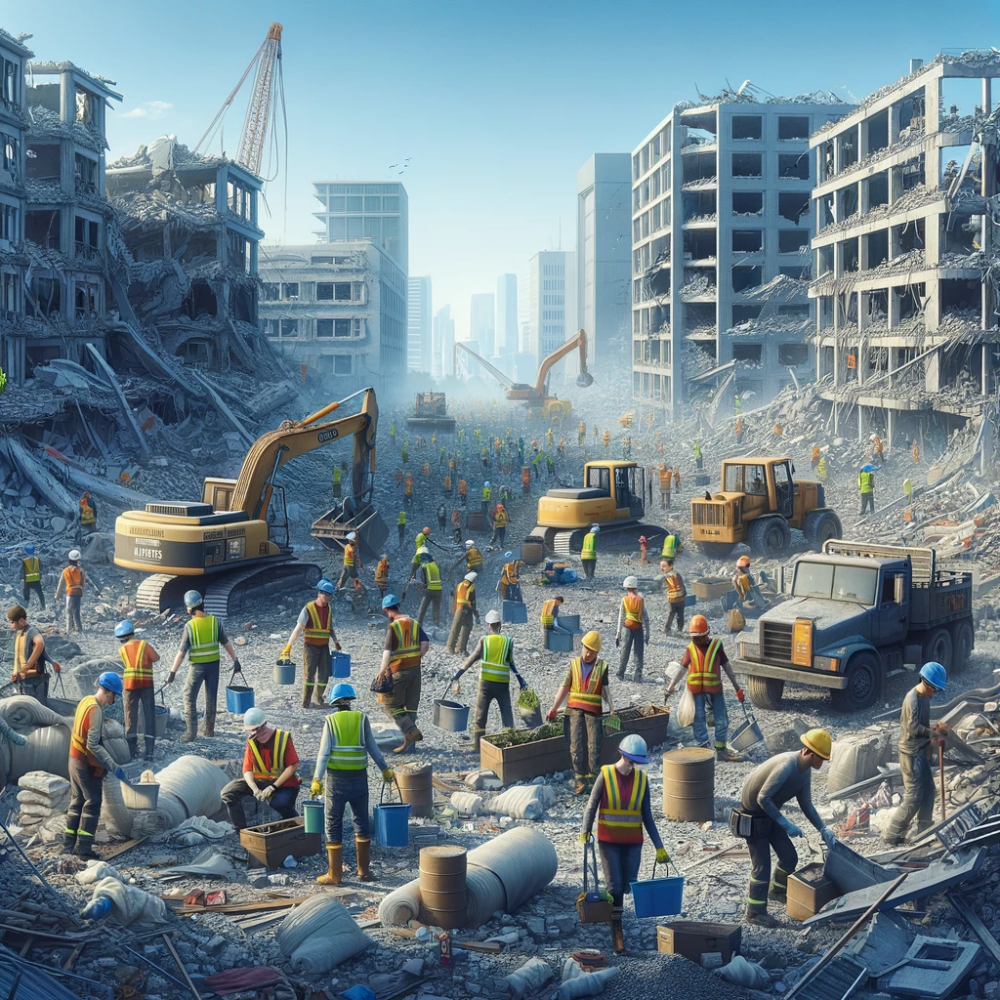

Luca: [dopo aver caricato a mano un'immagine, presa da una pagina web, all'indirizzo https://www.repubblica.it/esteri/2023/11/25/diretta/guerra_ucraina_russia_news_oggi-421190051/?ref=RHLF-BG-I421197206-P2-S1-F]

Mi spieghi cosa contiene questa immagine?
ChatGPT: L'immagine mostra una scena di distruzione, probabilmente il risultato di un disastro naturale o di un conflitto. Ci sono edifici gravemente danneggiati e detriti sparsi ovunque. Un'antenna alta sembra essere ancora in piedi in lontananza. I cavi elettrici sono abbattuti e penzolano pericolosamente bassi. In primo piano, c'è una vecchia automobile parcheggiata, che sembra essere rimasta indenne rispetto alla distruzione circostante. L'ambiente generale è desolato e sembra abbandonato, con nessuna presenza umana visibile nell'immagine. Il cielo è cupo e nuvoloso, aggiungendo un'atmosfera tetra allo scenario già desolante.
Luca: Bene, E ora puoi generare un'immagine fotorealistica che, partendo da questa immagine, contenga delle persone che stanno lavorando per rimediare ai danni?
Luca:

Ecco un'immagine generata che rappresenta una scena di recupero post-disastro con persone che lavorano attivamente alla pulizia e alla ricostruzione.
Luca: Bene anche per questo, ma potresti fare lo stesso modificando l'immagine iniziale?
Luca: Attualmente, non ho la capacità di modificare direttamente le immagini esistenti o di integrare elementi nuovi in foto già create. La mia funzionalità di generazione di immagini si basa sull'uso di descrizioni testuali per creare nuove immagini da zero. Se desideri un'immagine modificata, il modo migliore sarebbe utilizzare software di editing fotografico professionale o chiedere l'aiuto di un grafico esperto.